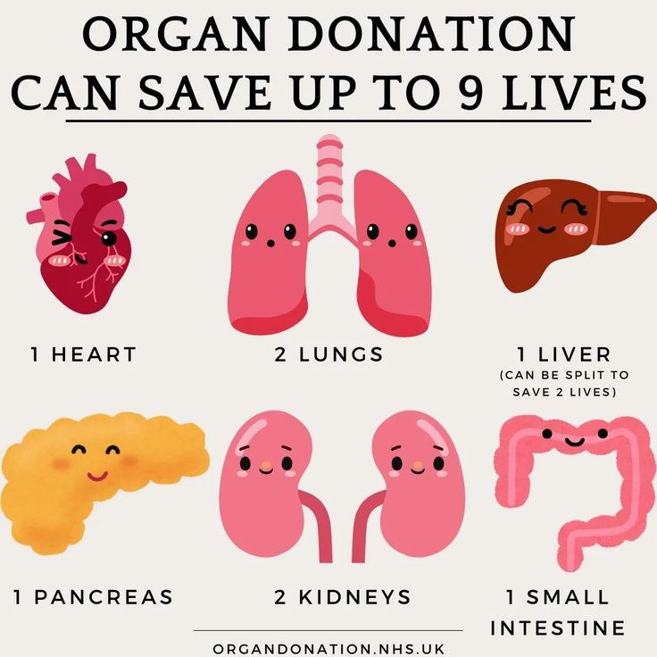
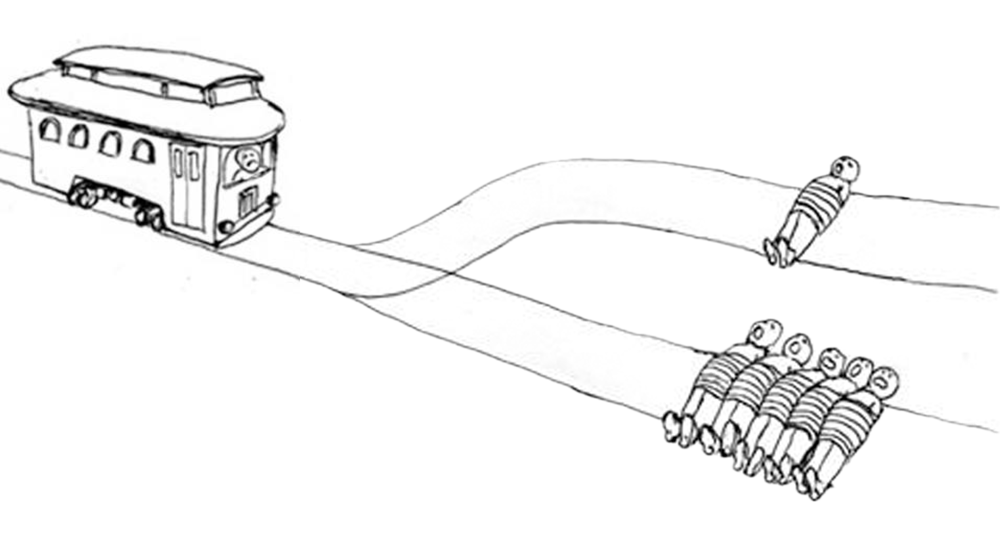
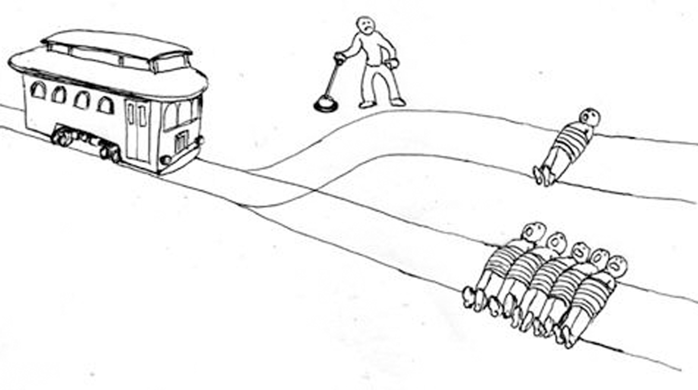

2026-11-09
Agenda
Agenda
PLEASE REMIND ME TO SAVE WHATEVER WE COME UP WITH!!!
Agenda
A perfectly general answer to the question of which things are right and wrong, an answer that identifies what makes right actions right and wrong actions wrong.
Agenda
Cheating on your romantic partner is wrong. Why?
Because it leads to so much emotional pain, in exchange for a comparably small and short-lived amount of sexual gratification.
I promise to drive you to the airport in the morning. It is wrong to break my promise because I don’t feel like getting up. Why?
Because your financial loss and distress over missing your flight has a bigger negative effect on overall happiness (taking into account both yours and mine) than does dragging myself out of bed.
I promise to drive you to the airport in the morning. It is not wrong to break my promise if someone has a heart attack and I need to rush him to the hospital instead. Why?
Because leaving him to die would have had a greater negative effect on the overall level of happiness of all involved (including yours, mine, his, and his family and friends’) than you missing your flight.
Suppose AU is false. Then:
But (1) and (2) are absurd. So AU is true.
Everyone’s happiness counts equally.
Oppressive laws and practices—sexist, racist, homophobic, transphobic, etc.—have a dramatic negative effect on the happiness of the oppressed, and this outweighs any positive effect they have on the happiness of others—so they are therefore wrong.
(Historically, Act Utilitarians have been important advocates for social reform.)
It is a truism that morality is subjective and relative. But there is also pressure to think that some moral demands are objective and absolute. Act Utilitarianism can explain this.
What makes you happy is subjective. Different people find pleasure in different things.
So morality is both subjective and relative: facts about what is right and wrong are relative to, and must respect, these subjective differences.
CONDONED LOBOTOMIES
The leaders of a certain oppressive country instituted a law that requires all newborn girls to be lobotomized. Dissenters were lobotomized as well. After a few generations, there are no more dissenters. The men are all happy with the arrangement, and the women are all lobotomized and have no opinion on the matter.
What matters for right and wrong is not what people believe makes them happy, but what actually makes them happy. So in this sense, right and wrong are objective.
Agenda

Argument
Objections?
Maybe we can explain why killing Nick was wrong by shifting to Rule Utilitarianism instead?
Brainstorm: What are some rules that, if adopted, would have a positive effect on overall levels of happiness?
If doctors adopt rule (1), people would be terrified to go to the hospital, and overall happiness would decrease. So they should adopt rule (2).
If we adopt rule (1), the institution of making promises will be destroyed, and we will lose the good things that depend on it, so our overall happiness will decrease. So we should adopt rule (2).
Can the Rule Utilitarian hold both that killing the patient to save five was morally wrong and that breaking a promise to rush someone to the hospital was morally right?
Adopting rule (3) over rule (2) saves the man with the heart attack and avoids putting the whole institution of making promises at risk. So we should adopt (3). So it was right to break the promise.
(Secretly) adopting rule (3) saves the five and avoids scaring off patients from doctors. So should adopt rule (3) over rule (2). So it was right for the doctor to harvest Nick’s organs.
The Rule Utilitarian has a specificity problem. Right and wrong depends on how specific the rules can be.
And, however she resolves this, it is hard to see how she can claim that killing Nick was wrong but breaking the promise was right:
Agenda

Argument
Objections?
